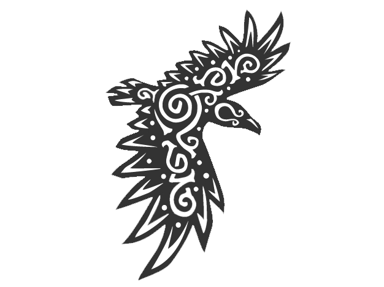

DENMARK
Denmark stands out within modern day Europe. With it being deemed as one of the happiest countries in the world. It's
cacophony of various peoples and cultures. It's long and rich history and not to mention its variety of unique and
delicious foods. Denmark is definitely a place to consider for your next vacation.
HISTORY: BORDERLAND OF EUROPE AND SCANDINAVIA

"Far off in the frozen north and the wind swept cliffs of Iceland, A poet writes and tells the tales
of his homeland and it's people. A land as harsh and unforgiving as its people whose earth freezes over
in the winter and whose sun would hide for months. He writes of kings and jarls stories of Dan
and Offa brothers from the family of Rig also known as the all seeing god Heimdall. Offa became
the father of the Angels an ancient people who would conquer the free sea and the province of
Britannia. Dan would become the father of the Dani in Scannia. Soon, everyone all around them
will know their homeland, as the land of the Danes."
If there was one thing Denmarks history is known for it would be Vikings! The viking tribes of scandinavia
and the germanic tribes of what is now modern day France and Germany can trace its origins back to Denmark. The
penninsula having been settled by early indoeuropean peoples creating seafaring communities which based their way
on life on fishing and sailing. Scandivania's harsh conditions had made it so its peoples had needed to rely on
raiding neighboring communities to survive, breeding a warrior culture which will become what we now know as the
vikings. During the great viking age, as viking kings began to amass wealth from raiding their neighbours
they had began to carve up chunks of land for themselves within England, France and more forming the Danelaw.
Back home, Denmark had begun to unite into one unified kingdom, with the first historically recognised king being
Gorm the Old who turned the city of Roskilde into its capital, with the area of Scania (south of modern day Sweden)
the Danish islands and Julland. It is said that the current royal family of Denmark can trace their lineage back
to Grom the Old making the Dannish monarchy the oldest in Europe.

With the end of the Viking Age and the spread of chrsitianity, Denmark would become the leading crusading state
in the Baltic sea. With blessing from the pope they lead a crusade against the pagan tribes of Livonia under
King Valdemar II. It is said on the year 1219 at the Battle of Lindanise, the cross had fell from heaven in the
shape of the Dannebrog, giving the Danes the courage to win the battle. With the Dannebrog becoming the worlds
oldest national flag still in use today.